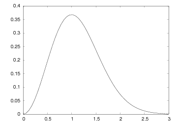

A single curve with label, title, and axes adjusted.
A single curve with label, title, and axes adjusted.
Easyviz is a unified interface to various packages for scientific visualization and plotting. The Easyviz interface is written in Python with the purpose of making it very easy to visualize data in Python scripts. Both curve plots and more advanced 2D/3D visualization of scalar and vector fields are supported. The Easyviz interface was designed with three ideas in mind: 1) a simple, Matlab-like syntax; 2) a unified interface to lots of visualization engines (called backends later): Gnuplot, Matplotlib, Grace, Veusz, Pmw.Blt.Graph, PyX, Matlab, VTK, VisIt, OpenDX; and 3) a minimalistic interface which offers only basic control of plots: curves, linestyles, legends, title, axis extent and names. More fine-tuning of plots can be done by invoking backend-specific commands.
Easyviz was made so that one can postpone the choice of a particular visualization package (and its special associated syntax). This is often useful when you quickly need to visualize curves or 2D/3D fields in your Python program, but haven't really decided which plotting tool to go for. As Python is gaining popularity at universities, students are often forced to continuously switch between Matlab and Python, which is straightforward for array computing, but (previously) annoying for plotting. Easyviz was therefore also made to ease the switch between Python and Matlab.
If you encounter problems with using Easyviz, please visit the Troubleshooting chapter and the Installation chapter at the end of the documentation.
The present documentation is available in a number of formats:
First principle. Array data can be plotted with a minimal set of keystrokes using a Matlab-like syntax. A simple
plots the data in (the NumPy array) t versus the data in (the NumPy array) y. If you need legends, control of the axis, as well as additional curves, all this is obtained by the standard Matlab-style commandst = linspace(0, 3, 51) # 51 points between 0 and 3 y = t**2*exp(-t**2) plot(t, y)
y2 = t**4*exp(-t**2)
# pick out each 4 points and add random noise:
t3 = t[::4]
y3 = y2[::4] + random.normal(loc=0, scale=0.02, size=len(t3))
plot(t, y1, 'r-')
hold('on')
plot(t, y2, 'b-')
plot(t3, y3, 'bo')
legend('t^2*exp(-t^2)', 't^4*exp(-t^2)', 'data')
title('Simple Plot Demo')
axis([0, 3, -0.05, 0.6])
xlabel('t')
ylabel('y')
show()
hardcopy('tmp0.eps') # this one can be included in LaTeX
hardcopy('tmp0.png') # this one can be included in HTML
plot(t, y1, 'r-', t, y2, 'b-', t3, y3, 'bo',
legend=('t^2*exp(-t^2)', 't^4*exp(-t^2)', 'data'),
title='Simple Plot Demo',
axis=(0, 3, -0.05, 0.6),
xlabel='t', ylabel='y',
hardcopy='tmp1.eps',
show=True)
hardcopy('tmp0.png')
x = linspace(-2, 2, 41) # 41 point on [-2, 2]
xv, yv = ndgrid(x, x) # define a 2D grid with points (xv,yv)
values = f(xv, yv) # function values
surfc(xv, yv, values,
shading='interp',
clevels=15,
clabels='on',
hidden='on',
show=True)
Second princple. Easyviz is just a unified interface to other plotting packages that can be called from Python. Such plotting packages are referred to as backends. Several backends are supported: Gnuplot, Matplotlib, Grace (Xmgr), Veusz, Pmw.Blt.Graph, PyX, Matlab, VTK, VisIt, OpenDX. In other words, scripts that use Easyviz commands only, can work with a variety of backends, depending on what you have installed on the machine in question and what quality of the plots you demand. For example, switching from Gnuplot to Matplotlib is trivial.
Scripts with Easyviz commands will most probably run anywhere since at least the Gnuplot package can always be installed right away on any platform. In practice this means that when you write a script to automate investigation of a scientific problem, you can always quickly plot your data with Easyviz (i.e., Matlab-like) commands and postpone to marry any specific plotting tool. Most likely, the choice of plotting backend can remain flexible. This will also allow old scripts to work with new fancy plotting packages in the future if Easyviz backends are written for those packages.
Third principle. The Easyviz interface is minimalistic, aimed at rapid prototyping of plots. This makes the Easyviz code easy to read and extend (e.g., with new backends). If you need more sophisticated plotting, like controlling tickmarks, inserting annotations, etc., you must grab the backend object and use the backend-specific syntax to fine-tune the plot. The idea is that you can get away with Easyviz and a plotting package-independent script "95 percent" of the time - only now and then there will be demand for package-dependent code for fine-tuning and customization of figures.
These three principles and the Easyviz implementation make simple things simple and unified, and complicated things are not more complicated than they would otherwise be. You can always start out with the simple commands - and jump to complicated fine-tuning only when strictly needed.
This tutorial starts with plotting a single curve with a simple plot(x,y) command. Then we add a legend, axis labels, a title, etc. Thereafter we show how multiple curves are plotted together. We also explain how line styles and axis range can be controlled. The next topic deals with animations and making movie files. More advanced subjects, such as fine tuning of plots (using plotting package-specific commands) and working with Axis and Figure objects, close the curve plotting part of the tutorial.
Various methods for visualization of scalar fields in 2D and 3D are treated next, before we show how 2D and 3D vector fields can be handled.
The recommended standard import of numpy and matplotlib in programs reads:
This import ensures that all functionality from different packages are prefixed by a short form of the package name. This convention has, from a computer science perspective, many advantages as one sees clearly where functionality comes from. However, convincing scientists with extensive Matlab, Fortran, or C++ experience to switch to Python can be hard when mathematical formulas are full of np. prefixes and all plotting commands are decorated with an "extra" plt. The developers of Easyviz think it is a major point to have Python code as close to Matlab and standard mathematical syntax as possible. Therefore, examples in this manual employ the "star import":import numpy as np import matplotlib.pyplot as plt
This statement imports the Easyviz plotting commands and also performs from numpy import *. Hence, mathematical functions like sin and log are available and work for arrays, as in Matlab, and the plotting commands are the same as those in Matlab. This type of import statement is similar to the popularfrom scitools.std import *
among Matplotlib users (although not promoted by Matplotlib developers). The primary additional feature of the scitools.std import is the possibility to choose among many different backends for plotting, where Matplotlib is one of the options.from matplotlib.pylab import *
Let us plot the curve y = t**2*exp(-t**2) for t values between 0 and 3. First we generate equally spaced coordinates for t, say 51 values (50 intervals). Then we compute the corresponding y values at these points, before we call the plot(t,y) command to make the curve plot. Here is the complete program:
from scitools.std import *
def f(t):
return t**2*exp(-t**2)
t = linspace(0, 3, 51) # 51 points between 0 and 3
y = zeros(len(t)) # allocate y with float elements
for i in xrange(len(t)):
y[i] = f(t[i])
plot(t, y)
show() # optional
from scitools.std import *
def f(t):
return t**2*exp(-t**2)
t = linspace(0, 3, 51) # 51 points between 0 and 3
y = f(t) # compute all f values at once
plot(t, y)
show() # optional
y = t**2*exp(-t**2)
To include the plot in electronic documents, we need a hardcopy of the figure in PostScript, PNG, or another image format. The hardcopy command produces files with images in various formats:
hardcopy('tmp1.eps') # produce PostScript
hardcopy('tmp1.png') # produce PNG
savefig('tmp1.eps') # produce PostScript
savefig('tmp1.png') # produce PNG
 A simple plot in PostScript format.
On some platforms, some backends may result in a plot that is shown in just a fraction of a second on the screen before the plot window disappears (using the Gnuplot backend on Windows machines or using the Matplotlib backend constitute two examples). To make the window stay on the screen, add
raw_input('Press the Return key to quit: ')
The x and y axes in curve plots should have labels, here t and y, respectively. Also, the curve should be identified with a label, or legend as it is often called. A title above the plot is also common. In addition, we may want to control the extent of the axes (although most plotting programs will automatically adjust the axes to the range of the data). All such things are easily added after the plot command:
xlabel('t')
ylabel('y')
legend('t^2*exp(-t^2)')
axis([0, 3, -0.05, 0.6]) # [tmin, tmax, ymin, ymax]
title('My First Easyviz Demo')
plot(t, y,
xlabel='t',
ylabel='y',
legend='t^2*exp(-t^2)',
axis=[0, 3, -0.05, 0.6],
title='My First Easyviz Demo',
savefig='tmp1.eps', # or hardcopy='tmp1.eps'
show=True)
With show=False one can avoid the plot window on the screen and just make the hardcopy. This feature is particularly useful if one generates a large number of separate figures in the program. The keyword savefig can be replaced by hardcopy if desired.
Note that we in the curve legend write t square as t^2 (LaTeX style) rather than t**2 (program style). Whichever form you choose is up to you, but the LaTeX form sometimes looks better in some plotting programs (Matplotlib and Gnuplot are two examples). See Figure fig:plot1c for what the modified plot looks like and how t^2 is typeset in Gnuplot.
A single curve with label, title, and axes adjusted.
A common plotting task is to compare two or more curves, which requires multiple curves to be drawn in the same plot. Suppose we want to plot the two functions f_1(t)=t^2\exp(-t^2) and f_2(t)=t^4\exp(-t^2). If we write two plot commands after each other, two separate plots will be made. To make the second plot command draw the curve in the first plot, we need to issue a hold('on') command. Alternatively, we can provide all data in a single plot command. A complete program illustrates the different approaches:
from scitools.std import * # for curve plotting
def f1(t):
return t**2*exp(-t**2)
def f2(t):
return t**2*f1(t)
t = linspace(0, 3, 51)
y1 = f1(t)
y2 = f2(t)
# Matlab-style syntax
plot(t, y1)
hold('on')
plot(t, y2)
xlabel('t')
ylabel('y')
legend('t^2*exp(-t^2)', 't^4*exp(-t^2)')
title('Plotting two curves in the same plot')
savefig('tmp2.eps') # or hardcopy('tmp2.eps')
# Alternative "Pythonic" style
plot(t, y1, t, y2, xlabel='t', ylabel='y',
legend=('t^2*exp(-t^2)', 't^4*exp(-t^2)'),
title='Plotting two curves in the same plot',
savefig='tmp2.eps')
Doing a hold('off') makes the next plot command create a new plot in the same window. This new plot just erases the previous curves.
With the keyword argrument grid=True to plot we can add a grid, which is frequently used when plotting curves (see Figure fig:plot2f).
The default location of the legends is dependent on the backend (some have a fixed location, like Gnuplot, and some try to find the most optimal location, like Matplotlib). One can control the location by the loc keyword to the legend function, e.g.,
legend('t^2*exp(-t^2)', 't^4*exp(-t^2)', loc='upper left')
plot(t, y1, t, y2, xlabel='t', ylabel='y',
legend=('t^2*exp(-t^2)', 't^4*exp(-t^2)'),
legend_loc=`upper left`, legend_fancybox=True,
axis=[0, 4, -0.1, 0.8],
title='Plotting two curves in the same plot',
savefig='tmp2.eps')
 A figure with legends placed to the upper left with a box frame.
A figure with legends placed to the upper left with a box frame.
The legend function also accepts a list of legends instead of the legends as separate positional arguments. This allows an overlapping syntax between Matplotlib and Easyviz so that the same code can apply either of the packages (however, Matplotlib's keywords to plot, like label and linewidth, are not recognized so not all syntax is interchangable).
The hold command either adds a new curve or replaces old curve(s) by new ones. Often one wants to make multiple figures in a program, realized as multiple windows on the screen. The figure() command creates a new figure:
More information in the figure command is found later on under the heading Working with Axis and Figure Objects.x = linspace(-2, 2, 81) y1 = sin(pi*x)*exp(-0.5*x**2) plot(x, y1) figure() # separate plot window y2 = sin(pi*x/2)*exp(-0.5*x**2) plot(x, y2) figure() # yet another plot window y3 = sin(pi*x/4)*exp(-0.5*x**2) plot(x, y3)
When plotting multiple curves in the same plot, the individual curves get distinct default line styles, depending on the program that is used to produce the curve (and the settings for this program). It might well happen that you get a green and a red curve (which is bad for a significant portion of the male population). Therefore, we often want to control the line style in detail. Say we want the first curve (t and y1) to be drawn as a red solid line and the second curve (t and y2) as blue circles at the discrete data points. The Matlab-inspired syntax for specifying line types applies a letter for the color and a symbol from the keyboard for the line type. For example, r- represents a red (r) line (-), while bo means blue (b) circles (o). The line style specification is added as an argument after the x and y coordinate arrays of the curve:
plot(t, y1, 'r-')
hold('on')
plot(t, y2, 'bo')
# or
plot(t, y1, 'r-', t, y2, 'bo')
 Two curves in the same plot, with controlled line styles.
Two curves in the same plot, with controlled line styles.
Assume now that we want to plot the blue circles at every 4 points only. We can grab every 4 points out of the t array by using an appropriate slice: t2 = t[::4]. Note that the first colon means the range from the first to the last data point, while the second colon separates this range from the stride, i.e., how many points we should "jump over" when we pick out a set of values of the array.
from scitools.std import *
def f1(t):
return t**2*exp(-t**2)
def f2(t):
return t**2*f1(t)
t = linspace(0, 3, 51)
y1 = f1(t)
t2 = t[::4]
y2 = f2(t2)
plot(t, y1, 'r-6', t2, y2, 'bo3',
xlabel='t', ylabel='y',
axis=[0, 4, -0.1, 0.6],
legend=('t^2*exp(-t^2)', 't^4*exp(-t^2)'),
title='Plotting two curves in the same plot',
hardcopy='tmp2.eps')
In this plot we also adjust the size of the line and the circles by adding an integer: r-6 means a red line with thickness 6 and bo5 means red circles with size 5. The effect of the given line thickness and symbol size depends on the underlying plotting program. For the Gnuplot program one can view the effect in Figure fig:plot2g.
 Circles at every 4 points and extended line thickness (6) and circle size (3).
Circles at every 4 points and extended line thickness (6) and circle size (3).
The different available line colors include
We remark that in the Gnuplot program all the different line types are drawn as solid lines on the screen. The hardcopy chooses automatically different line types (solid, dashed, etc.) and not in accordance with the line type specification.
Lots of markers at data points are available:
Another Example. Let us extend the previous example with a third curve where the data points are slightly randomly distributed around the f_2(t) curve:
from scitools.std import *
def f1(t):
return t**2*exp(-t**2)
def f2(t):
return t**2*f1(t)
t = linspace(0, 3, 51)
y1 = f1(t)
y2 = f2(t)
# Pick out each 4 points and add random noise
t3 = t[::4] # slice, stride 4
random.seed(11) # fix random sequence
noise = random.normal(loc=0, scale=0.02, size=len(t3))
y3 = y2[::4] + noise
plot(t, y1, 'r-')
hold('on')
plot(t, y2, 'ks-') # black solid line with squares at data points
plot(t3, y3, 'bo')
legend('t^2*exp(-t^2)', 't^4*exp(-t^2)', 'data')
title('Simple Plot Demo')
axis([0, 3, -0.05, 0.6])
xlabel('t')
ylabel('y')
show()
savefig('tmp3.eps') # or hardcopy
savefig('tmp3.png') # or hardcopy
Minimalistic Typing. When exploring mathematics in the interactive Python shell, most of us are interested in the quickest possible commands. Here is an example of minimalistic syntax for comparing the two sample functions we have used in the previous examples:
t = linspace(0, 3, 51) plot(t, t**2*exp(-t**2), t, t**4*exp(-t**2))
Text. A text can be placed at a point (x,y) using the call
text(x, y, 'Some text')
More Examples. The examples in this tutorial, as well as additional examples, can be found in the examples directory in the root directory of the SciTools source code tree.
All the Easyviz commands can of course be issued in an interactive Python session. The only thing to comment is that the plot command returns a result:
Most users will just ignore this output line.>>> t = linspace(0, 3, 51) >>> plot(t, t**2*exp(-t**2)) [<scitools.easyviz.common.Line object at 0xb5727f6c>]
All Easyviz commands that produce a plot return an object reflecting the particular type of plot. The plot command returns a list of Line objects, one for each curve in the plot. These Line objects can be invoked to see, for instance, the value of different parameters in the plot:
>>> line, = plot(x, y, 'b')
>>> getp(line)
{'description': '',
'dims': (4, 1, 1),
'legend': '',
'linecolor': 'b',
'pointsize': 1.0,
...
A sequence of plots can be combined into an animation and stored in a movie file. First we need to generate a series of hardcopies, i.e., plots stored in files. Thereafter we must use a tool to combine the individual plot files into a movie file.
Example. The function f(x; m,s) = 1/(sqrt(2*pi)*s)*exp(-0.5*((x-m)/s)**2) is known as the Gaussian function or the probability density function of the normal (or Gaussian) distribution. This bell-shaped function is "wide" for large s and "peak-formed" for small s, see Figure fig:plot4. The function is symmetric around x=m (m=0 in the figure). Our goal is to make an animation where we see how this function evolves as s is decreased. In Python we implement the formula above as a function f(x, m, s).
 Different shapes of a Gaussian function.
Different shapes of a Gaussian function.
The animation is created by varying s in a loop and for each s issue a plot command. A moving curve is then visible on the screen. One can also make a movie file that can be played as any other computer movie using a standard movie player. To this end, each plot is saved to a file, and all the files are combined together using some suitable tool, which is reached through the movie function in Easyviz. All necessary steps will be apparent in the complete program below, but before diving into the code we need to comment upon a couple of issues with setting up the plot command for animations.
The underlying plotting program will normally adjust the y axis to the maximum and minimum values of the curve if we do not specify the axis ranges explicitly. For an animation such automatic axis adjustment is misleading - the axis ranges must be fixed to avoid a jumping axis. The relevant values for the axis range is the minimum and maximum value of f. The minimum value is zero, while the maximum value appears for x=m and increases with decreasing s. The range of the y axis must therefore be [0,f(m; m, \min s)].
The function f is defined for all -\infty < x < \infty, but the function value is very small already 3s away from x=m. We may therefore limit the x coordinates to [m-3s,m+3s].
Now we are ready to take a look at the complete code for animating how the Gaussian function evolves as the s parameter is decreased from 2 to 0.2:
from scitools.std import *
import time
def f(x, m, s):
return (1.0/(sqrt(2*pi)*s))*exp(-0.5*((x-m)/s)**2)
m = 0
s_start = 2
s_stop = 0.2
s_values = linspace(s_start, s_stop, 30)
x = linspace(m -3*s_start, m + 3*s_start, 1000)
# f is max for x=m; smaller s gives larger max value
max_f = f(m, m, s_stop)
# Show the movie on the screen
# and make hardcopies of frames simultaneously
counter = 0
for s in s_values:
y = f(x, m, s)
plot(x, y, axis=[x[0], x[-1], -0.1, max_f],
xlabel='x', ylabel='f', legend='s=%4.2f' % s,
hardcopy='tmp%04d.png' % counter)
counter += 1
#time.sleep(0.2) # can insert a pause to control movie speed
# Make movie file the simplest possible way
movie('tmp*.png')
Note that the s values are decreasing (linspace handles this automatically if the start value is greater than the stop value). Also note that we, simply because we think it is visually more attractive, let the y axis go from -0.1 although the f function is always greater than zero.
Remarks on Filenames. For each frame (plot) in the movie we store the plot in a file. The different files need different names and an easy way of referring to the set of files in right order. We therefore suggest to use filenames of the form tmp0001.png, tmp0002.png, tmp0003.png, etc. The printf format 04d pads the integers with zeros such that 1 becomes 0001, 13 becomes 0013 and so on. The expression tmp*.png will now expand (by an alphabetic sort) to a list of all files in proper order. Without the padding with zeros, i.e., names of the form tmp1.png, tmp2.png, ..., tmp12.png, etc., the alphabetic order will give a wrong sequence of frames in the movie. For instance, tmp12.png will appear before tmp2.png.
Note that the names of plot files specified when making hardopies must be consistent with the specification of names in the call to movie. Typically, one applies a Unix wildcard notation in the call to movie, say plotfile*.eps, where the asterisk will match any set of characters. When specifying hardcopies, we must then use a filename that is consistent with plotfile*.eps, that is, the filename must start with plotfile and end with .eps, but in between these two parts we are free to construct (e.g.) a frame number padded with zeros.
We recommend to always remove previously generated plot files before a new set of files is made. Otherwise, the movie may get old and new files mixed up. The following Python code removes all files of the form tmp*.png:
import glob, os
for filename in glob.glob('tmp*.png'):
os.remove(filename)
import shutil, os
subdir = 'temp' # name of subfolder for plot files
if os.path.isdir(subdir): # does the subfolder already exist?
shutil.rmtree(subdir) # delete the whole folder
os.mkdir(subdir) # make new subfolder
os.chdir(subdir) # move to subfolder
# ...perform all the plotting...
# ...make movie...
os.chdir(os.pardir) # optional: move up to parent folder
Movie Formats. Having a set of (e.g.) tmp*.png files, one can simply generate a movie by a movie('tmp*.png') call. The movie function generates a movie file called movie.avi (AVI format), movie.mpeg (MPEG format), or movie.gif (animated GIF format) in the current working directory. The movie format depends on the encoders found on your machine.
You can get complete control of the movie format and the name of the movie file by supplying more arguments to the movie function. First, let us generate an animated GIF file called tmpmovie.gif:
movie('tmp_*.eps', encoder='convert', fps=2,
output_file='tmpmovie.gif')
An AVI movie can be generated by the call
movie('tmp_*.eps', encoder='ffmpeg', fps=4,
output_file='tmpmovie1.avi',
movie('tmp_*.eps', encoder='ppmtompeg', fps=24,
output_file='tmpmovie2.mpeg',
The next sample call to movie uses the Mencoder tool and specifies some additional arguments (video codec, video bitrate, and the quantization scale):
movie('tmp_*.eps', encoder='mencoder', fps=24,
output_file='tmpmovie.mpeg',
vcodec='mpeg2video', vbitrate=2400, qscale=4)
Playing movie files can be done by a lot of programs. Windows Media
Player is a default choice on Windows machines. On Unix, a variety
of tools can be used. For animated GIF files the animate program
from the ImageMagick suite is suitable, or one can simply
show the file in a web page with the HTML command
 . AVI and MPEG files can be played by,
for example, the
myplayer, vlc, or totem programs.
. AVI and MPEG files can be played by,
for example, the
myplayer, vlc, or totem programs.
When calculating long time series, it may be desirable to have a moving plot window that follows the time series. The module MovingPlotWindow was made for this purpose. There are three different modes of this tool, where each mode moves the window in a certain way. With mode set as continuous movement, the plot window moves with the curves continuously. With mode set as continuous drawing, the curves are drawn from left to right in the plot window, as an animation (one step at a time). When the curves reach the right border of the plot window, the window (or more correctly, the x-axis) is moved in a jump to the right so that the curves are coming in from the left border again. With mode set as jumps the curves are plotted directly in the window and shown for a specified period of time (the pause parameter), then the axis jump one window to the right, and the curves are displayed in this (time) window. The jumps mode is well suited for quickly browsing a time series. The continuous drawing mode is aimed at studing the "tip" of the time series as they are computed, and continuous movement is a kind of default choice for most purposes. Running the module file gives a demo of the three modes.
Below is an example of how to compute a time series by finite differences and comparing this series with the exact solutions. For large times, there is a fequency discrepancy that one wants to investigate.
def _demo(I, k, dt, T, mode='continuous movement'):
"""
Solve u' = -k**2*u, u(0)=I, u'(0)=0 by a finite difference
method with time steps dt, from t=0 to t=T.
"""
if dt > 2./k:
print 'Unstable scheme'
N = int(round(T/float(dt)))
u = zeros(N+1)
t = linspace(0, T, N+1)
umin = -1.2*I
umax = -umin
period = 2*pi/k # period of the oscillations
plot_manager = MovingPlotWindow(8*period, dt, yaxis=[umin, umax],
mode=mode)
u[0] = I
u[1] = u[0] - 0.5*dt**2*k**2*u[0]
for n in range(1,N):
u[n+1] = 2*u[n] - u[n-1] - dt**2*k**2*u[n]
if plot_manager.plot(n):
s = plot_manager.first_index_in_plot
plot(t[s:n+2], u[s:n+2], 'r-',
t[s:n+2], I*cos(k*t)[s:n+2], 'b-',
axis=plot_manager.axis(),
title="Solution of u'' + k^2 u = 0 for t=%6.3f (mode: %s)" \
% (t[n+1], mode))
plot_manager.update(n)
An appropriate import statement is
from scitools.MovingPlotWindow import MovingPlotWindow
The information in the previous sections aims at being sufficient for the daily work with plotting curves. Sometimes, however, one wants to fine-control the plot or how Easyviz behaves. First, we explain how to set the backend. Second, we tell how to speed up the from scitools.std import * statement. Third, we show how to operate with the plotting program directly and using plotting program-specific advanced features. Fourth, we explain how the user can grab Figure and Axis objects that Easyviz produces "behind the curtain".
The Easyviz backend can either be set in a configuration file (see "Setting Parameters in the Configuration File" below), by importing a special backend in the program, or by adding a command-line option
where name is the name of the backend: gnuplot, vtk, matplotlib, etc. Which backend you choose depends on what you have available on your computer system and what kind of plotting functionality you want.--SCITOOLS_easyviz_backend name
An alternative method is to import a specific backend in a program. Instead of the from scitools.std import * statement one writes
Note the trailing underscore in the module names for the various backends.from numpy import * from scitools.easyviz.gnuplot_ import * # work with Gnuplot # or from scitools.easyviz.vtk_ import * # work with VTK
The following program prints a list of the names of the available backends on your computer system:
There will be quite some output explaining the missing backends and what must be installed to use these backends. Be prepared for exceptions and error messages too.from scitools.std import * backends = available_backends() print 'Available backends:', backends
The from scitools.std import * statement imports many modules and packages:
The scipy import can take some time and lead to slow start-up of plot scripts. A more minimalistic import for curve plotting isfrom numpy import * from scitools.numpyutils import * # some convenience functions from numpy.lib.scimath import * from scipy import * # if scipy is installed import sys, operator, math from scitools.StringFunction import StringFunction from glob import glob
Alternatively, one can edit the SciTools configuration file as explained below in the section "Setting Parameters in the Configuration File".from scitools.easyviz import * from numpy import *
Many discourage the use of "star import" as shown above. For example, the standard import of Numerical Python in all of its documentation is
A similar import for SciTools and Easyviz isimport numpy as np
Although np functions are important into the namespace of st in this case, we recommend to distinguish the packages when using a prefix. A typical plotting example will then readimport scitools.std as st import numpy as np
x = np.linspace(0, 3, 51) y = x**2*np.exp(-x) st.plot(x, y, 'r-', title="Plot")
The corresponding syntax for the minimalistic import of scitools.easyviz and numpy reads
import scitools.easyviz as ev import numpy as np
Easyviz is a subpackage of SciTools, and the the SciTools configuration file, called scitools.cfg has several sections ([easyviz], [gnuplot], and [matplotlib]) where parameters controlling the behavior of plotting can be set. For example, the backend for Easyviz can be controlled with the backend parameter:
Similarly, Matplotlib's use of LaTeX can be controlled by a boolean parameter:[easyviz] backend = vtk
The text[matplotlib] text.usetex = <bool> false
A configuration file with name .scitools.cfg file can be placed in the current working folder, thereby affecting plots made in this folder, or it can be located in the user's home folder, which will affect all plotting sessions for the user in question. There is also a common SciTools config file scitools.cfg for the whole site, located in the directory where the scitools package is installed. It is recommended to copy the scitools.cfg, either from installation or the SciTools source folder lib/scitools, to .scitools.cfg in your home folder. Then you can easily control the Easyviz backend and other paramteres by editing your local .scitools.cfg file.
Parameters set in the configuration file can also be set directly on the command line when running a program. The name of the command-line option is
where sectionname is the name of the section in the file and parametername is the name of the parameter. For example, setting the backend parameter in the [easyviz] section by--SCITOOLS_sectionname_parametername
Here is an example where we use Matplotlib as backend, turn on the use of LaTeX in Matplotlib, and avoid the potentially slow import of SciPy:--SCITOOLS_easyviz_backend gnuplot
python myprogram.py --SCITOOLS_easyviz_backend matplotlib \
--SCITOOLS_matplotlib_text.usetex true --SCITOOLS_scipy_load no
Easyviz supports just the most common plotting commands, typically the commands you use "95 percent" of the time when exploring curves. Various plotting packages have lots of additional commands for different advanced features. When Easyviz does not have a command that supports a particular feature, one can grab the Python object that communicates with the underlying plotting program (known as "backend") and work with this object directly, using plotting program-specific command syntax. Let us illustrate this principle with an example where we add a text and an arrow in the plot, see Figure fig:plot2i.
 Illustration of a text and an arrow using Gnuplot-specific commands.
Illustration of a text and an arrow using Gnuplot-specific commands.
Easyviz does not support arrows at arbitrary places inside the plot, but Gnuplot does. If we use Gnuplot as backend, we may grab the Gnuplot object and issue Gnuplot commands to this object directly. Here is an example of the typical recipe, written after the core of the plot is made in the ordinary (plotting program-independent) way:
if backend == 'gnuplot':
g = get_backend()
# g is a Gnuplot object, work with Gnuplot commands directly:
g('set label "global maximum" at 0.1,0.5 font "Times,18"')
g('set arrow from 0.5,0.48 to 0.98,0.37 linewidth 2')
g.refresh()
g.hardcopy('tmp2.eps') # make new hardcopy
g.reset() # new plot
data = Gnuplot.Data(t, t**3*exp(-t), with_='points 3 3',
title='t**3*exp(-t)')
func = Gnuplot.Func('t**4*exp(-t)', title='t**4*exp(-t)')
g('set tics border font "Courier,14"')
g.plot(func, data)
Here is an example with Matplotlib:
if backend == 'matplotlib':
pyplot = get_backend()
# Work with standard matplotlib.pyplot functions
The idea advocated here is that you can quickly generate plots with Easyviz using standard commands that are independent of the underlying plotting package. However, when you need advanced features, you must add plotting package-specific code as shown above. This principle makes Easyviz a light-weight interface, but without limiting the available functionality of various plotting programs.
Easyviz supports the concept of Axis objects, as in Matlab. The Axis object represents a set of axes, with curves drawn in the associated coordinate system. A figure is the complete physical plot. One may have several axes in one figure, each axis representing a subplot. One may also have several figures, represented by different windows on the screen or separate hardcopies.
Users with Matlab experience may prefer to set axis labels, ranges, and the title using an Axis object instead of providing the information in separate commands or as part of a plot command. The gca (get current axis) command returns an Axis object, whose set method can be used to set axis properties:
plot(t, y1, 'r-', t, y2, 'bo',
legend=('t^2*exp(-t^2)', 't^4*exp(-t^2)'),
savefig='tmp2.eps')
ax = gca() # get current Axis object
ax.setp(xlabel='t', ylabel='y',
axis=[0, 4, -0.1, 0.6],
title='Plotting two curves in the same plot')
show() # show the plot again after ax.setp actions
The figure() call makes a new figure, i.e., a new window with curve plots. Figures are numbered as 1, 2, and so on. The command figure(3) sets the current figure object to figure number 3.
Suppose we want to plot our y1 and y2 data in two separate windows. We need in this case to work with two Figure objects:
plot(t, y1, 'r-', xlabel='t', ylabel='y',
axis=[0, 4, -0.1, 0.6])
figure() # new figure
plot(t, y2, 'bo', xlabel='t', ylabel='y')
figure(1) # go back to first figure
title('One curve')
legend('t^2*exp(-t^2)')
show()
savefig('tmp2_1.eps')
figure(2) # go to second figure
title('Another curve')
savefig('tmp2_2.eps')
show()
These parameters may be of interest for troubleshooting when Easyviz does not produce what you expect.fig = gcf(); print fig.dump()
Let us then make a third figure with two plots, or more precisely, two axes: one with y1 data and one with y2 data. Easyviz has a command subplot(r,c,a) for creating r rows and c columns and set the current axis to axis number a. In the present case subplot(2,1,1) sets the current axis to the first set of axis in a "table" with two rows and one column. Here is the code for this third figure:
figure() # new, third figure
# Plot y1 and y2 as two axis in the same figure
subplot(2, 1, 1)
plot(t, y1, xlabel='t', ylabel='y')
subplot(2, 1, 2)
plot(t, y2, xlabel='t', ylabel='y')
title('A figure with two plots')
show()
savefig('tmp2_3.eps')
If we need to place an axis at an arbitrary position in the figure, we must use the command
The four parameteres left, bottom, width, height are location values between 0 and 1 ((0,0) is the lower-left corner and (1,1) is the upper-right corner). However, this might be a bit different in the different backends (see the documentation for the backend in question).ax = axes(viewport=[left, bottom, width, height])
Sometimes, especially during debugging or when trying out a large-scale experiment, it is nice to turn off all plotting on the screen and all making of hardcopies. This is easily done by
All the plot functions now "do nothing" (actually they are DoNothing objects from scitools.misc).turn_off_plotting(globals())
A scalar field is a function from space or space-time to a real value. This real value typically reflects a scalar physical parameter at every point in space (or in space and time). One example is temperature, which is a scalar quantity defined everywhere in space and time. In a visualization context, we work with discrete scalar fields that are defined on a grid. Each point in the grid is then associated with a scalar value.
There are several ways to visualize a scalar field in Easyviz. Both two- and three-dimensional scalar fields are supported. In two dimensions (2D) we can create elevated surface plots, contour plots, and pseudocolor plots, while in three dimensions (3D) we can create isosurface plots, volumetric slice plots, and contour slice plots.
To create elevated surface plots we can use either the surf or the mesh command. Both commands have the same syntax, but the mesh command creates a wireframe mesh while the surf command creates a solid colored surface.
Our examples will make use of the scalar field f(x,y)=sin(r), where r is the distance in the plane from the origin, i.e., r=sqrt(x**2+y**2). The x and y values in our 2D domain lie between -5 and 5.
The example first creates the necessary data arrays for 2D scalar field plotting: the coordinates in each direction, extensions of these arrays to form a ndgrid, and the function values. The latter array is computed in a vectorized operation which requires the extended coordinate arrays from the ndgrid function. The mesh command can then produce the plot with a syntax that mirrors the simplicity of the plot command for curves:
The mesh command returns a reference to a new Surface object, here stored in a variable h. This reference can be used to set or get properties in the object at a later stage if needed. The resulting plot can be seen in Figure fig:mesh_ex1.x = y = linspace(-5, 5, 21) xv, yv = ndgrid(x, y) values = sin(sqrt(xv**2 + yv**2)) h = mesh(xv, yv, values)
We remark that the computations in the previous example are vectorized. The corresponding scalar computations using a double loop read
values = zeros(x.size, y.size)
for i in xrange(x.size):
for j in xrange(y.size):
values[i,j] = sin(sqrt(x[i]**2 + y[j]**2))
 Result of the mesh command for plotting a 2D scalar field (Gnuplot backend).
Result of the mesh command for plotting a 2D scalar field (Gnuplot backend).
The surf command employs the same syntax, but results in a different plot (see Figure fig:surf_ex1):
surf(xv, yv, values)
 Result of the surf command (Gnuplot backend).
Result of the surf command (Gnuplot backend).
The surf command offers many possibilities to adjust the resulting plot:
setp(interactive=False)
surf(xv, yv, values)
shading('flat')
colorbar()
colormap(hot())
axis([-6,6,-6,6,-1.5,1.5])
view(35,45)
show()
surf(xv, yv, values,
shading='flat',
colorbar='on',
colormap=hot(),
axis=[-6,6,-6,6,-1.5,1.5],
view=[35,45])
 Result of an extended surf command (Gnuplot backend).
Result of an extended surf command (Gnuplot backend).
A contour plot is another useful technique for visualizing scalar fields. The primary examples on contour plots from everyday life is the level curves on geographical maps, reflecting the height of the terrain. Mathematically, a contour line, also called an isoline, is defined as the implicit curve f(x,y)=c. The contour levels c are normally uniformly distributed between the extreme values of the function f (this is the case in a map: the height difference between two contour lines is constant), but in scientific visualization it is sometimes useful to use a few carefully selected c values to illustrate particular features of a scalar field.
In Easyviz, there are several commands for creating different kinds of contour plots:
By default, five uniformly spaced contour level curves are drawn, see Figure fig:contour_ex1.contour(xv, yv, values)
 Result of the simplest possible contour command (Gnuplot backend).
Result of the simplest possible contour command (Gnuplot backend).
The number of levels in a contour plot can be specified with an additional argument:
The result can be seen in Figure fig:contour_ex2.n = 15 # number of desired contour levels contour(xv, yv, values, n)
 A contour plot with 15 contour levels (Gnuplot backend).
A contour plot with 15 contour levels (Gnuplot backend).
Sometimes one wants contour levels that are not equidistant or not distributed throughout the range of the scalar field. Individual contour levels to be drawn can easily be specified as a list:
Now, the levels list specify the values of the contour levels, and the clabel keyword allows labeling of the level values in the plot. Figure fig:contour_ex3 shows the result. We remark that the Gnuplot backend colors the contour lines and places the contour values and corresponding colors beside the plot. Figures that are reproduced in black and white only can then be hard to analyze. Other backends may draw the contour lines in black and annotate each line with the corresponding contour level value. Such plots are better suited for being displayed in black and white.levels = [-0.5, 0.1, 0.3, 0.9] contour(xv, yv, values, levels, clabels='on')
 Four individually specified contour levels (Gnuplot backend).
Four individually specified contour levels (Gnuplot backend).
The contourf command,
gives a filled contour plot as shown in Figure fig:contourf_ex1. Only the Matplotlib and VTK backends currently supports filled contour plots.contourf(xv, yv, values)
 Filled contour plot created by the contourf command (VTK backend).
Filled contour plot created by the contourf command (VTK backend).
The contour lines can be "lifted up" in 3D space, as shown in Figure fig:contour3_ex1, using the contour3 command:
contour3(xv, yv, values, 15)
 Example on the contour3 command for elevated contour levels (Gnuplot backend).
Example on the contour3 command for elevated contour levels (Gnuplot backend).
Finally, we show a simple example illustrating the meshc and surfc commands:
meshc(xv, yv, values,
clevels=10,
colormap=hot(),
grid='off')
figure()
surfc(xv, yv, values,
clevels=15,
colormap=hsv(),
grid='off',
view=(30,40))
 Wireframe mesh with contours at the bottom (Gnuplot backend).
Wireframe mesh with contours at the bottom (Gnuplot backend).
 Surface plot with contours (Gnuplot backend).
Surface plot with contours (Gnuplot backend).
Another way of visualizing a 2D scalar field in Easyviz is the pcolor command. This command creates a pseudocolor plot, which is a flat surface viewed from above. The simplest form of this command follows the syntax of the other commands:
We can set the color shading in a pseudocolor plot either by giving the shading keyword argument to pcolor or by calling the shading command. The color shading is specified by a string that can be either 'faceted' (default), 'flat', or 'interp' (interpolated). The Gnuplot and Matplotlib backends support 'faceted' and 'flat' only, while the VTK backend supports all of them.pcolor(xv, yv, values)
 Pseudocolor plot (Gnuplot backend).
Pseudocolor plot (Gnuplot backend).
For 3D scalar fields, isosurfaces or contour surfaces constitute the counterpart to contour lines or isolines for 2D scalar fields. An isosurface connects points in a scalar field with (approximately) the same scalar value and is mathematically defined by the implicit equation f(x,y,z)=c. In Easyviz, isosurfaces are created with the isosurface command. We will demonstrate this command using 3D scalar field data from the flow function. This function, also found in Matlab, generates fluid flow data. Our first isosurface visualization example then looks as follows:
x, y, z, v = flow() # generate fluid-flow data
setp(interactive=False)
h = isosurface(x,y,z,v,-3)
h.setp(opacity=0.5)
shading('interp')
daspect([1,1,1])
view(3)
axis('tight')
show()
 Isosurface plot (VTK backend).
Isosurface plot (VTK backend).
Here is another example that demonstrates the isosurface command (again using the flow function):
x, y, z, v = flow()
setp(interactive=False)
h = isosurface(x,y,z,v,0)
shading('interp')
daspect([1,4,4])
view([-65,20])
axis('tight')
show()
 Another isosurface plot (VTK backend).
Another isosurface plot (VTK backend).
Another way of visualizing scalar volume data is by using the slice_ command (since the name slice is already taken by a built-in function in Python for array slicing, we have followed the standard Python convention and added a trailing underscore to the name in Easyviz - slice_ is thus the counterpart to the Matlab function slice.). This command draws orthogonal slice planes through a given volumetric data set. Here is an example on how to use the slice_ command:
x, y, z = ndgrid(seq(-2,2,.2), seq(-2,2,.25), seq(-2,2,.16),
sparse=True)
v = x*exp(-x**2 - y**2 - z**2)
xslice = [-1.2, .8, 2]
yslice = 2
zslice = [-2, 0]
slice_(x, y, z, v, xslice, yslice, zslice,
colormap=hsv(), grid='off')
 Slice plot where the x axis is sliced at -1.2, 0.8, and 2, the y axis is sliced at 2, and the z axis is sliced at -2 and 0.0 (VTK backend).
Slice plot where the x axis is sliced at -1.2, 0.8, and 2, the y axis is sliced at 2, and the z axis is sliced at -2 and 0.0 (VTK backend).
Contours in Slice Planes.
With the contourslice command we can create contour plots in planes aligned with the coordinate axes. Here is an example using 3D scalar field data from the flow function:
x, y, z, v = flow()
setp(interactive=False)
h = contourslice(x, y, z, v, seq(1,9), [], [0], linspace(-8,2,10))
axis([0, 10, -3, 3, -3, 3])
daspect([1, 1, 1])
ax = gca()
ax.setp(fgcolor=(1,1,1), bgcolor=(0,0,0))
box('on')
view(3)
show()
 Contours in slice planes (VTK backend).
Contours in slice planes (VTK backend).
Here is another example where we draw contour slices from a three-dimensional MRI data set:
import scipy.io
mri = scipy.io.loadmat('mri_matlab_v6.mat')
D = mri['D']
image_num = 8
# Displaying a 2D Contour Slice
contourslice(D, [], [], image_num, daspect=[1,1,1], indexing='xy')
 Contour slice plot of a 3D MRI data set (VTK backend).
Contour slice plot of a 3D MRI data set (VTK backend).
A vector field is a function from space or space-time to a vector value, where the number of components in the vector corresponds to the number of space dimensions. Primary examples on vector fields are the gradient of a scalar field; or velocity, displacement, or force in continuum physics.
In Easyviz, a vector field can be visualized either by a quiver (arrow) plot or by various kinds of stream plots like stream lines, stream ribbons, and stream tubes. Below we will look closer at each of these visualization techniques.
The quiver and quiver3 commands draw arrows to illustrate vector values (length and direction) at discrete points. As the names indicate, quiver is for 2D vector fields in the plane and quiver3 plots vectors in 3D space. The basic usage of the quiver command goes as follows:
Our vector field in this example is simply the gradient of the scalar field used to illustrate the commands for 2D scalar field plotting. The gradient function computes the gradient using finite difference approximations. The result is a vector field with components uv and vv in the x and y directions, respectively. The grid points and the vector components are passed as arguments to quiver, which in turn produces the plot in Figure fig:quiver_ex1.x = y = linspace(-5, 5, 21) xv, yv = ndgrid(x, y, sparse=False) values = sin(sqrt(xv**2 + yv**2)) uv, vv = gradient(values) quiver(xv, yv, uv, vv)
 Velocity vector plot (Gnuplot backend).
Velocity vector plot (Gnuplot backend).
The arrows in a quiver plot are automatically scaled to fit within the grid. If we want to control the length of the arrows, we can pass an additional argument to scale the default lengths:
This value of scale will thus stretch the vectors to their double length. To turn off the automatic scaling, we can set the scale value to zero.scale = 2 quiver(xv, yv, uv, vv, scale)
Quiver plots are often used in combination with other plotting commands such as pseudocolor plots or contour plots, since this may help to get a better perception of a given set of data. Here is an example demonstrating this principle for a simple scalar field, where we plot the field values as colors and add vectors to illustrate the associated gradient field:
xv, yv = ndgrid(linspace(-5,5,101), linspace(-5,5,101))
values = sin(sqrt(xv**2 + yv**2))
pcolor(xv, yv, values, shading='interp')
# Create a coarser grid for the gradient field
xv, yv = ndgrid(linspace(-5,5,21), linspace(-5,5,21))
values = sin(sqrt(xv**2 + yv**2))
uv, vv = gradient(values)
hold('on')
quiver(xv, yv, uv, vv, 'filled', 'k', axis=[-6,6,-6,6])
figure(2)
contour(xv, yv, values, 15)
hold('on')
quiver(xv, yv, uv, vv, axis=[-6,6,-6,6])
 Combined quiver and pseudocolor plot (VTK backend).
Combined quiver and pseudocolor plot (VTK backend).
 Combined quiver and pseudocolor plot (VTK backend).
Combined quiver and pseudocolor plot (VTK backend).
Visualization of 3D vector fields by arrows at grid points can be done with the quiver3 command. At the time of this writing, only the VTK backend supports 3D quiver plots. A simple example of plotting the "radius vector field" v=(x,y,z) is given next:
The strings 'filled' and 'r' are optional and makes the arrows become filled and red, respectively. The resulting plot is presented in Figure fig:quiver3_ex1.x = y = z = linspace(-3,3,4) xv, yv, zv = ndgrid(x, y, z, sparse=False) uv = xv vv = yv wv = zv quiver3(xv, yv, zv, uv, vv, wv, 'filled', 'r', axis=[-7,7,-7,7,-7,7])
Stream plots constitute an alternative to arrow plots for visualizing vector fields. The stream plot commands currently available in Easyviz are streamline, streamtube, and streamribbon. Stream lines are lines aligned with the vector field, i.e., the vectors are tangents to the streamlines. Stream tubes are similar, but now the surfaces of thin tubes are aligned with the vectors. Stream ribbons are also similar: thin sheets are aligned with the vectors. The latter type of visualization is also known as stream or flow sheets. In the near future, Matlab commands such as streamslice and streamparticles might also be implemented.
We start with an example on how to use the streamline command. In this example (and in the following examples) we will use the wind data set that is included with Matlab. This data set represents air currents over a region of North America and is suitable for testing the different stream plot commands. The following commands will load the wind data set and then draw some stream lines from it:
import scipy.io # needed to load binary .mat-files
# Load the wind data set and create variables
wind = scipy.io.loadmat('wind.mat')
x = wind['x']
y = wind['y']
z = wind['z']
u = wind['u']
v = wind['v']
w = wind['w']
# Create starting points for the stream lines
sx, sy, sz = ndgrid([80]*4, seq(20,50,10), seq(0,15,5),
sparse=False)
# Draw stream lines
streamline(x, y, z, u, v, w, sx, sy, sz,
view=3, axis=[60,140,10,60,-5,20])
Before we call the streamline command we must set up some starting point coordinates for the stream lines. In this example, we have used the ndgrid command to define the starting points with the line:
This command defines starting points which all lie on x=80, y=20,30,40,50, and z=0,5,10,15. We now have all the data we need for calling the streamline command. The first six arguments to the streamline command are the grid coordinates (x,y,z) and the 3D vector data (u,v,w), while the next three arguments are the starting points which we defined with the ndgrid command above. The resulting plot is presented in Figure fig:streamline_ex1.sx, sy, sz = ndgrid([80]*4, seq(20,50,10), seq(0,15,5))
 Stream line plot (Vtk backend).
Stream line plot (Vtk backend).
The next example demonstrates the streamtube command applied to the same wind data set:
streamtube(x, y, z, u, v, w, sx, sy, sz,
daspect=[1,1,1],
view=3,
axis='tight',
shading='interp')
Finally, we illustrate the streamribbon command:
streamribbon(x, y, z, u, v, w, sx, sy, sz,
ribbonwidth=5,
daspect=[1,1,1],
view=3,
axis='tight',
shading='interp')
Easyviz also supports a unified interface to simple bar charts. Here is a simple example for displaying tabular values, with one bar for each data point:
from scitools.std import *
languages = ['C', 'Java', 'C++', 'PHP', 'VB', 'C#', 'Python',
'Perl', 'JavaScript']
ratings = [18, 18, 9.7, 9.7, 6.4, 4.4, 4.2, 3.6, 2.5]
bar(ratings, 'r',
barticks=languages,
ylabel='Ratings in percent (TIOBE Index, April 2010)',
axis=[-1, len(languages), 0, 20],
hardcopy='tmp.eps')
 A simple bar chart illustrating the popularity of common programming languages.
A simple bar chart illustrating the popularity of common programming languages.
One may display groups of bars. The data can then be put in a matrix, where rows (1st index) correspond to the groups the columns to the data within one group:
data = [[ 0.15416284 0.7400497 0.26331502]
[ 0.53373939 0.01457496 0.91874701]
[ 0.90071485 0.03342143 0.95694934]
[ 0.13720932 0.28382835 0.60608318]]
bar(data,
barticks=['group 1', 'group 2', 'group 3', 'group 4'],
legend=['bar 1', 'bar 2', 'bar 3'],
axis=[-1, data.shape[0], 0, 1.3],
ylabel='Normalized CPU time',
title='Bars from a matrix, now with more annotations')
The demo program in examples/bar_demo.py contains additional examples and features.
As we have mentioned earlier, Easyviz is just a unified interface to other plotting packages, which we refer to as backends. We have currently implemented backends for Gnuplot, Grace, OpenDX, Matlab, Matplotlib, Pmw.Blt, Veusz, VisIt, and VTK. Some are more early in developement than others, like the backends for OpenDx and VisIt.
Because of limitations in many of the plotting packages, not all features in Easyviz are supported by each of the backends. Gnuplot has (at the time of this writing) no support for visualization of 3D vector fields, so this is of course not available in the Gnuplot backend either.
Some supported visualization programs are commented on below.
Gnuplot. Gnuplot is a command-driven interactive or scripted plotting utility that works on a wide variety of platforms. Gnuplot supports many types of plots in both 2D and 3D, including curve plots, contour plots, vector plots, and surface plots. 3D scalar and vector fields are not supported. To access Gnuplot from Python and send NumPy arrays to Gnuplot, we use the Python module Gnuplot.
Matlab. Many view Matlab as the de facto standard for making curves and plots of 2D scalar/vector fields.
Matplotlib. Matplotlib is now quickly gaining wide popularity in the scientific Python community and has established itself as the de facto standard for curve plotting and 2D contour and (recently) surface plotting. The interface to Matplotlib is Matlab-insipired, and different backends are used to create the plots: Gtk, Tk, WxWidgets and many more. (Since Easyviz and Matplotlib haver very similar Matlab-style syntax, Easyviz is just a thin layer on top of Matplotlib to enable Matplotlib to be used with the Easyviz unified syntax.) Matplotlib is now a comprehensive package with lots of tuning possibilities that Easyviz does not support - but one can fetch the underlying Matplotlib from Easyviz and call all the functionality of Matplotlib directly.
Grace. Grace is a highly interactive curve plotting program on the Unix/X11 platform which has been popular for many years. It does not support 2D or 3D scalar or vector fields. However, it has a lot of functionality for computing with curves and adjusting/fine-tuning plots interactively.
PyX. PyX is a Python package for the creation of PostScript and PDF files. It combines an abstraction of the PostScript drawing model with a TeX/LaTeX interface. Complex tasks like 2d and 3d plots in publication-ready quality are built out of these primitives.
Pmw.Blt.Graph. Pmw (Python Mega Widgets) extends the Tkinter package with more sophisticated widgets, included an interactive widget for curve plotting. This widget is based on the BLT package (an extension of Tk written in C). The BLT backend offers currenlty only basic plotting functionality.
Veusz. From Veusz homepage: Veusz is a GUI scientific plotting and graphing package. It is designed to produce publication-ready Postscript or PDF output. SVG, EMF and bitmap formats export are also supported. Veusz has a comprehensive GUI and produces really high-quality plots.
VTK. VTK (Visualization ToolKit) is a package primarily aimed at visualizing 2D and 3D scalar and vector fields by a range of techniques. VTK is used to achieve 2D and 3D visualizations of the same type as Matlab offers. However, VTK can do much more (although the Easyviz commands are restricted to what is typically offered by Matlab).
All code that is common to all backends is gathered together in a file called common.py. For each backend there is a separate file where the backend dependent code is stored. For example, code that are specific for the Gnuplot backend, are stored in a file called gnuplot_.py and code specific for the VTK backend are stored in vtk_.py (note the final underscore in the stem of the filename - all backend files have this underscore).
Each backend is a subclass of class BaseClass. The BaseClass code is found in common.py and contains all common code for the backends. Basically, a backend class extends BaseClass with rendering capabilities and backend-specific functionality.
The most important method that needs to be implemented in the backend is the _replot method, which updates the backend and the plot after a change in the data. Another important method for the backend class is the hardcopy method, which stores an image of the data in the current figure to a file.
Inspired by Matlab, the Easyviz interface is organized around figures and axes. A figure contains an arbitrary number of axes, and the axes can be placed in arbitrary positions in the figure window. Each figure appears in a separate window on the screen. The current figure is accessed by the gcf() call. Similarly, the current axes are accessed by calling gca().
It is natural to have one class for figures and one for axes. Class Figure contains a dictionary with one (default) or more Axis objects in addition to several properties such as figure width and height. Class Axis has another dictionary with the plot data as well as lots of parameters for colors, text fonts, labels on the axes, hidden surfaces, etc. For example, when adding an elevated surface to the current figure, this surface will be appended to a list in the current Axis object. Optionally one can add the surface to another Axis object by specifying the Axis instance as an argument.
All the objects that are to be plotted in a figure such as curves, surfaces, vectors, and so on, are stored in repsectively classes. An elevated surface, for instance, is represented as an instance of class Surface. All such classes are subclasses of PlotProperties. Besides being the base class of all objects that can be plotted in a figure (Line, Surface, Contours, VelocityVectors, Streams, Volume), class PlotProperties also stores various properties that are common to all objects in a figure. Examples include line properties, material properties, storage arrays for x and y values for Line objects, and x, y, and z values for 3D objects such as Volume.
The classes mentioned above, i.e., BaseClass with subclasses, class PlotProperties with subclasses, as well as class Figure and class Axis constitute the most important classes in the Easyviz interface. Other less important classes are Camera, Light, Colorbar, and MaterialProperties.
All the classes in common.py follows a convention where class parameters are set by a setp method and read by a getp method. For example, we can set the limits on the x axis by using the setp method in a Axis instance:
To extract the values of these limits we can writeax = gca() # get current axis ax.setp(xmin=-2, xmax=2)
xmin = ax.getp('xmin')
xmax = ax.getp('xmax')
xlim([-2,2])
Easyviz comes with the SciTools package, so to install Easyviz, you must install SciTools, which is available from Google code.
If you run a Linux system that allows installation from Debian repositories (Ubuntu is an example), you get SciTools and all its dependencies with one Unix command:
(SciTools is in standard Debian.)Unix> sudo apt-get install python-scitools
Otherwise, you download the tarball with the SciTools software, pack it out, go the scitools folder, and run the standard command
Easyviz is reached as the package scitools.easyviz and can be imported in several ways (see the paragraph heading "Importing Just Easyviz" in the Tutorial).Unix/DOS> python setup.py install
Easyviz will not work unless you have one or more plotting programs correctly installed. Below, we have collected some brief information on installing various programs. (Note that if you do an apt-get install python-scitools all necessary plotting programs are automatically installed for you.)
Please check your plotting program independently of Easyviz, as described in the Check Your Backends! section of the Troubleshooting chapter, if you encounter strange errors during Easyviz plotting.
Compile from Source. Gnuplot can be downloaded from gnuplot.sourceforge.net. It builds easily on most Unix systems. You also need the Gnuplot Python module, which can be obtained from gnuplot-py.sourceforge.net.
Debian/Ubuntu. Prebuilt versions are available for Debian/Ubuntu: run
but running these commands are not necessary since on Debian/Ubuntu you will install python-scitools which effectively installs all the software that SciTools depend on.apt-get install gnuplot gnuplot-x11 python-gnuplot
On Windows, one can either use Gnuplot under Cygwin or use a precompiled binary from sourgeforce.net.
Using the Gnuplot Cygwin package. In this case there are two things that needs to be changed in the gp_cygwin.py file in the top-level directory of the Gnuplot.py source tree. First you need to change the gnuplot_command variable to gnuplot instead of pgnuplot.exe. Then you should change the default_term variable to x11 instead of windows since the Gnuplot Cygwin package is not compiled with the Windows terminal. Finally, install Gnuplot.py (python setup.py install) and launch X11 by running startx from a Cygwin prompt. Try to run the test.py script that comes with Gnuplot.py. If everything works, Easyviz can use Gnuplot.
Using Gnuplot Binaries.
First download the Gnuplot 4.2.4 binaries for Windows (or a newer version) A possible URL is
The zip file may have another name for a newer version of Gnuplot on Windows.http://prdownloads.sourceforge.net/sourceforge/gnuplot/gp424win32.zip
Then unzip the gp424win32.zip file to the folder
Add the folder nameC:\gnuplot
to the PATH environment variable (this is done in a graphical interface for setting environment variables).C:\gnuplot\bin
Check out the latest SVN revision of the Python interface to Gnuplot, which is the Python module file Gnuplot.py:
svn co https://gnuplot-py.svn.sourceforge.net/svnroot/gnuplot-py/trunk/gnuplot-py
Install Gnuplot.py:
cd gnuplot-py python setup.py bdist_wininst dist\gnuplot-py-1.8+.win32.exe
Check out the latest SVN revision of SciTools:
svn co http://scitools.googlecode.com/svn/trunk/ scitools
Install SciTools:
(The SciTools version number differs.)cd scitools python setup.py bdist_wininst dist\SciTools-0.4.win32.exe
This is normally just a matter of
in the root directory of the Matplotlib code.python setup.py install
Windows. You can download prebuilt binaries from the Matplotlib home page.
Yes. It is wise to perform a diagnostic test before reporting any error or trouble to the SciTools maintainers. Find the source folder of SciTools and go to the misc subfolder. Run
On the screen, you can see what you have of working software that Easyviz may use. You do not need to see "ok" after each test, but at least one plotting program must be properly installed. Include the detailed diagonstics in the scitools_diagnostic.log file as attachment in any mail to the SciTools developers.python diagonstic.py
Depending on the backend used for plotting with Easyviz, the plot window may be killed when the program terminates. Adding a statement that makes the program halt provides a remedy:
raw_input('Press Return key to quit: ')
Another remedy can be to add a show() call at the end of the plotting:
show()
With the Gnuplot backend, thread errors from Python may occur if you plot many curves. The remedy is to do import time and insert a time.sleep(0.2) (pause the program for 0.2 sec) between each call to the plot command.
Remark: Scitools v0.8 automatically inserts a 0.2 sec pause when plotting many curves with the Gnuplot backend.
You probably run Easyviz with Matplotlib as backend, and you do not have a working LaTeX installation. Matplotlib applies LaTeX for improved rendering of legends, titles, and numbers. The fix is to turn off the use of LaTeX, which is done by the text.usetex parameter in the matplotlib section of the configuration file. Set this parameter to false. See the subsection "Setting Parameters in the Configuration File" in the section "Advanced Easyviz Topics" in the Easyviz tutorial. The tutorial can be reached from the code.google.com site or by running pydoc scitools.easyviz. If you use Matplotlib as default plotting engine, we recommend to have a .scitools.cfg configuration file in your home folder and that use control the use of Matplotlib parameters in this file.
Another fix of LaTeX-related problems is to switch to another backend than Matplotlib.
SciTools version 0.7 changed the default backend for plotting to Matplotlib instead of Gnuplot (provided you have Matplotlib and you run setup.py to install SciTools - binaries for Debian still has Gnuplot as the plotting engine). Some functionality in Gnuplot, especially regarding 2D vector/scalar fields, is not yet present in Matplotlib and/or supported by the Easyviz interface to Matplotlib. You then need to explicitly run the script with Gnuplot as plottin engine:
or you must import gnuplot explicitly in the program:python myprogram.py --SCITOOLS_easyviz_backend gnuplot
or you can edit the installed scitools.cfg file ("backend" keyword in the "easyviz" section), or your local version .scitools.cfg in your home folder, or maybe the simplest solution is to reinstall SciTools with Gnuplot as plotting engine:from scitools.std import * from scitools.easyviz.gnuplot_ import *
python setup.py install --easyviz_backend gnuplot
Yes, this is very convenient when debugging other (non-plotting) parts of a program. Just write
from scitools.std import * turn_off_plotting(globals())
When you encounter a problem with Easyviz plotting, make sure that the backend works correctly on its own (there may, e.g., be installation problems with the backend - Easyviz just calls the backend to do the plotting).
For the Gnuplot backend you can try the following commands in a terminal window:
This should result in a plot of the sine function on the screen. If this command does not work, Easyviz will not work with the Gnuplot backend. A common problem is that Gnuplot is installed, but the path to the Gnuplot executable is not registered in the PATH environment variable. See the section Installing Gnuplot if you need help with installing the Gnuplot program and its Python interface.Unix/DOS> gnuplot gnuplot> plot sin(x)
The following code tests if you have installed Matplotlib correctly:
In case of problems, go to the Matplotlib source directory, remove the build subdirectory, and try a new install with python setup.py install.import matplotlib.pyplot as plt import numpy as np x = np.linspace(0, 2*np.pi, 101) y = np.sin(x) plt.plot(x, y) plt.show()
When using the Gnuplot backend, the following error may be encountered:
A remedy is to create fewer plots, and for animations, update the plot window less frequently. For example,thread.error: can't start new thread
for i in range(number_of_frames_in_animation):
<prepare data>
if i % == 100: # plot every 100 frames
<make plot>
The call to movie demands that you have video encoders installed. The legal encoders are mencoder, ffmpeg, mpeg_encode, ppmtompeg, mpeg2enc, and convert. Some of these also require additional software to be installed.
To install (e.g.) convert, you need to install the ImageMagick software suite, since convert is a part of that package. ImageMagick is easy to install on most platforms. The ppmtompeg encoder is a part of the Netpbm software, while mpeg2enc is a part of mjpegtools.
On Linux Ubuntu you can issue the following installation command to install most of the available encoders for the movie function:
Unix> sudo apt-get install mencoder ffmpeg libavcodec-unstripped-51 netpbm mjpegtools imagemagick
When something goes wrong with the movie making, check the output in the terminal window. By default, Easyviz prints the command that makes the movie. You can manually copy this command and run it again to start finding out what can be wrong. Just switching to a different encoder can be a quick remedy. The switch is done with the encoder keyword argument to movie, e.g.,
# Make animated GIF movie in the file tmpmovie.gif
movie('tmp_*.png', encoder='convert', fps=2,
output_file='tmpmovie.gif')
When plotting inside a loop, e.g.,
for i in some_values:
...
plot(t, X0, 'r-6', axis=(0, 1, -2, 2),
xlabel='t', ylabel='Xt', title='My Title')
plot(t, X0, 'r-6', axis=(0, 1, -2, 2),
xlabel='t', ylabel='Xt', title='My Title')
for i in some_values:
...
plot(t, X0)
There is a verbose Easyviz documentation that mainly focuses on an introduction to Easyviz (what you read now is a part of that documentation).
Another useful source of information is the many examples that come with the SciTools/Easyviz source code. The examples are located in the examples subfolder of the source.
Note that Easyviz only support the most basic types of plots:
The following Matlab-like commands (functions) are available (but not supported by all backends):
 Two curves in the same plot.
Two curves in the same plot.  Curves with a grid.
Curves with a grid.  A plot with three curves.
A plot with three curves.  3D quiver plot (VTK backend).
3D quiver plot (VTK backend).  Stream tubes (Vtk backend).
Stream tubes (Vtk backend).  Stream ribbons (VTK backend).
Stream ribbons (VTK backend).